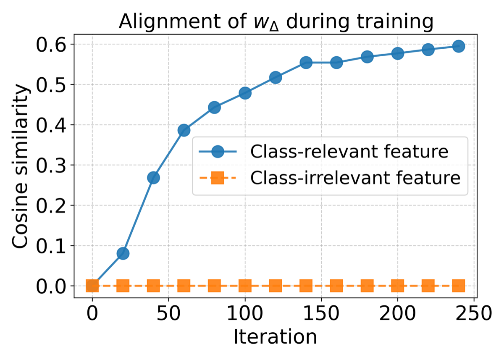

Why it matters왜 중요한가
Mamba's empirical magic is the selective gate — but no one had shown training actually delivers that selection.
Mamba의 경험적 비결은 선택적 게이트인데, 학습이 그 선택을 정말 만들어낸다는 것을 아무도 보이지 못했다.
Prior SSM theory focused on expressive power — what Mamba could represent — not on whether gradient descent actually trains the gate to do feature selection, nor on its generalization. That gap matters because Mamba is known to be sensitive to hyperparameters; without a learning-dynamics account, "selectivity" stays a story. This work analyzes a simplified but faithful Mamba block (single-layer, single-head selective SSM with input-dependent gating + a 2-layer MLP) on two canonical data regimes — majority-voting (label set by aggregate evidence) and locality-structured (label set by where relevant tokens cluster) — and tracks how the gate's gradient evolves token-by-token. It is, to the authors' knowledge, the first generalization guarantee for a gated SSM.
기존 SSM 이론은 표현력 — Mamba가 무엇을 표현할 수 있는가 — 에 집중했고, 경사하강이 게이트를 특징 선택용으로 실제 학습시키는지, 또 그 일반화는 다루지 않았다. Mamba가 하이퍼파라미터에 민감하다는 점에서 이 공백은 중요하다. 학습 동역학 설명이 없으면 '선택성'은 이야기일 뿐이다. 본 연구는 단순화하되 충실한 Mamba 블록(단층·단일헤드 선택적 SSM + 입력 의존 게이팅 + 2층 MLP)을 두 표준 데이터 체제 — 다수결(집계 증거로 라벨 결정)과 국소성 구조(관련 토큰이 모이는 위치로 라벨 결정) — 에서 분석하고, 게이트 그래디언트가 토큰별로 어떻게 진화하는지 추적한다. 저자들이 아는 한 게이트형 SSM에 대한 첫 일반화 보장이다.

By the numbers핵심 숫자
of a trained gated SSM학습된 게이트형 SSM의
첫 일반화 분석
vs. majority-voting gap표본 복잡도
vs. 다수결 격차
vs. voting gap수렴 반복수
vs. 투표 격차
relevant feature (vs ~0 irrelevant)wΔ 코사인 정렬 →
관련 특징 (무관 ~0)
as token noise τ shrinks토큰 잡음 τ 감소 시
N·T 모두 개선
locality-structured data다수결 +
국소성 구조 데이터
Results — what the bounds say결과 — 경계가 말하는 것
| Regime | Sample complexity N | Iterations T | Faster when…더 빠를 때… |
|---|---|---|---|
| Majority-voting | Ω( L²d / η²(αr−αc)² ) | Θ( L² / η(αr−αc)² ) | voting gap larger투표 격차 클수록 |
| Locality-structured | Ω( L²d / η²·Δ² ) | Θ( L² / η·Δ ) | relevant tokens local관련 토큰 국소적일수록 |
| Both공통 | ↓ with lower noise τ | ↓ with lower noise τ | noise τ smaller잡음 τ 작을수록 |
Δ here denotes the locality separation term ( (1/2)ΔL⁺ − (1/2)ΔL⁻ ): learning accelerates when relevant features are more tightly clustered in positive samples than in negatives.
여기서 Δ는 국소성 분리항 ( (1/2)ΔL⁺ − (1/2)ΔL⁻ )으로, 양성 표본에서 관련 특징이 음성보다 더 조밀히 모일수록 학습이 빨라진다.
In one diagram한 장의 그림
Idea: two ways the gate selects아이디어: 게이트가 선택하는 두 방식
Majority-voting → align up다수결 → 정렬 상승
When the label depends on aggregate evidence, wΔ grows a positive inner product with both class-relevant directions (o⁺, o⁻) while staying ~0 on irrelevant ones (Lemma 4.1). The gate amplifies informative tokens; bigger voting gap αr−αc ⇒ faster learning.
라벨이 집계 증거에 의존하면 wΔ는 두 클래스 관련 방향(o⁺, o⁻)과 양의 내적을 키우고 무관 방향에는 ~0을 유지(보조정리 4.1). 게이트는 정보성 토큰을 증폭한다. 투표 격차 αr−αc가 클수록 학습이 빠르다.
Locality → push down noise국소성 → 잡음 억제
When relevant and confusing tokens are balanced, wΔ can't amplify the signal — instead it drives a strongly negative inner product along irrelevant directions (Lemma 4.2), suppressing distractors so locality becomes discriminative. Tighter clustering of relevant tokens ⇒ faster learning.
관련·혼동 토큰이 균형이면 wΔ는 신호를 증폭할 수 없다 — 대신 무관 방향으로 강한 음의 내적을 만들어(보조정리 4.2) 방해 요소를 억제해 국소성이 변별력을 갖게 한다. 관련 토큰이 조밀할수록 학습이 빠르다.
How it works어떻게 작동하나
- Define a faithful toy Mamba충실한 토이 Mamba 정의Single-layer, single-head selective SSM with input-dependent gating + 2-layer MLP; WO Gaussian-init, gate wΔ zero-init, readout v fixed — tractable yet keeps the core gate.단층·단일헤드 선택적 SSM + 입력 의존 게이팅 + 2층 MLP. WO는 가우시안 초기화, 게이트 wΔ는 0 초기화, 출력 v는 고정 — 분석 가능하면서 핵심 게이트는 유지.
- Structured data with planted features특징을 심은 구조화 데이터Tokens carry class-relevant and class-irrelevant patterns under token-level noise τ, in majority-voting and locality-structured regimes.토큰은 토큰 단위 잡음 τ 아래 클래스 관련·무관 패턴을 담으며, 다수결·국소성 구조 두 체제로 구성.
- Track gradients via "lucky neurons"'행운 뉴런'으로 그래디언트 추적Follow MLP neurons whose init happens to align with the signal, and decompose the gate's gradient by token position to handle Mamba's multiplicative recurrence.초기화가 우연히 신호와 정렬된 MLP 뉴런을 추적하고, Mamba의 곱셈적 재귀를 다루기 위해 게이트 그래디언트를 토큰 위치별로 분해.
- Prove bounds + verify경계 증명 + 검증Derive non-asymptotic N, T for zero generalization error; synthetic experiments confirm faster convergence with larger voting gap, stronger locality, and lower noise.일반화 오차 0을 위한 비점근 N·T를 유도하고, 합성 실험으로 투표 격차·국소성이 크고 잡음이 작을수록 빠른 수렴을 확인.
What to take away그래서, 가져갈 것
Selectivity is learnable, not just expressible. Plain gradient descent provably turns Mamba's gate into a feature selector — closing the gap between Mamba's story and its training reality.
선택성은 표현 가능할 뿐 아니라 학습 가능하다. 단순 경사하강이 Mamba 게이트를 특징 선택기로 만든다는 것이 증명됨 — Mamba의 서사와 학습 현실 사이 간극을 메운다.
Attention-like, but via recurrence. The gate filters relevant features the way attention does, yet without quadratic cost — a theoretical counter-point to Transformer-centric explanations.
어텐션 같되 재귀로. 게이트는 어텐션처럼 관련 특징을 거르되 이차 비용이 없다 — 트랜스포머 중심 설명에 대한 이론적 반례.
Data structure governs speed. Bounds scale as 1/gap² and 1/noise², so a bigger voting margin or tighter locality directly buys faster, cheaper learning.
데이터 구조가 속도를 좌우. 경계가 1/gap²·1/noise²로 스케일하므로, 큰 투표 마진이나 조밀한 국소성이 곧 더 빠르고 저렴한 학습으로 이어진다.
A reusable framework for gated nets. The "lucky neuron" + position-decomposed gradient toolkit could analyze other gated/hybrid architectures beyond attention.
게이트 네트워크용 재사용 프레임워크. '행운 뉴런' + 위치 분해 그래디언트 도구는 어텐션 너머의 다른 게이트형·하이브리드 구조 분석에도 쓸 수 있다.